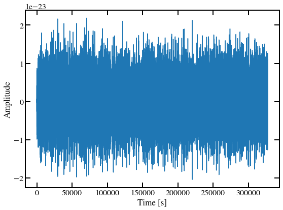
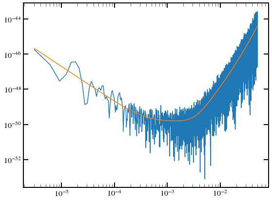
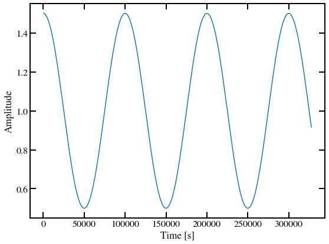
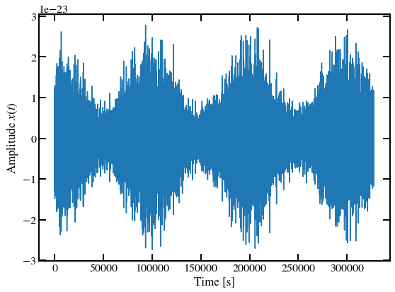
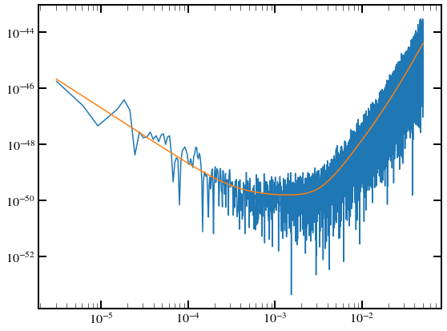
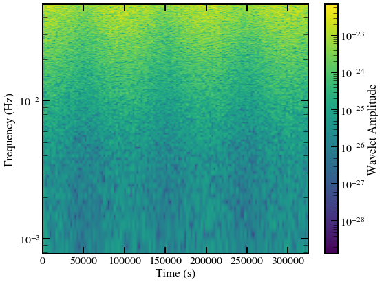
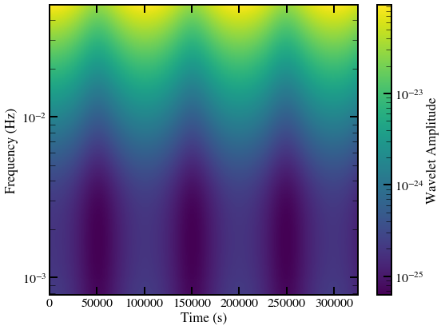
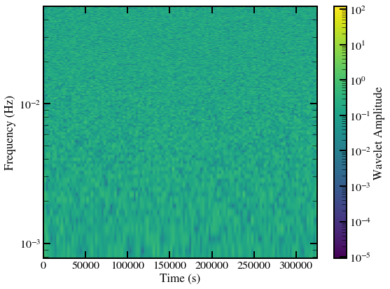
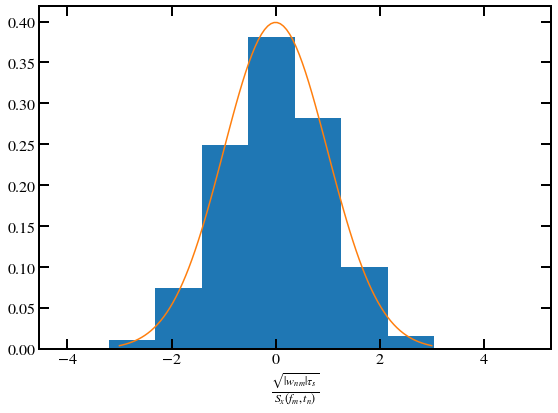

Noise in the wavelet domain#
1. Imports#
import numpy as np
from scipy import stats
import matplotlib.pyplot as plt
# from backgrounds import plotting
np.random.seed(1234)
<frozen importlib._bootstrap>:219: RuntimeWarning: numpy.ufunc size changed, may indicate binary incompatibility. Expected 216 from C header, got 232 from PyObject
2. Generate data#
def generate_noise(psd_func, n_data, fs):
"""
Noise generator from arbitrary power spectral density.
Uses a Gaussian random generation in the frequency domain.
Parameters
----------
psd_func: callable
one-sided PSD function in A^2 / Hz, where A is the unit of the desired
output time series. Can also return a p x p spectrum matrix
n_data: int
size of output time series
fs: float
sampling frequency in Hz
Returns
-------
tseries: ndarray
generated time series
"""
# Number of points to generate in the frequency domain (circulant embedding)
n_psd = 2 * n_data
# Number of positive frequencies
n_fft = int((n_psd-1)/2)
# Frequency array
f = np.fft.fftfreq(n_psd)*fs
# Avoid zero frequency as it sometimes makes the PSD infinite
f[0] = f[1]
# Compute the PSD (or the spectrum matrix)
psd_f = psd_func(np.abs(f))
if psd_f.ndim == 1:
psd_sqrt = np.sqrt(psd_f)
# Real part of the Noise fft : it is a gaussian random variable
noise_tf_real = np.sqrt(0.5) * psd_sqrt[0:n_fft + 1] * np.random.normal(
loc=0.0, scale=1.0, size=n_fft + 1)
# Imaginary part of the Noise fft :
noise_tf_im = np.sqrt(0.5) * psd_sqrt[0:n_fft + 1] * np.random.normal(
loc=0.0, scale=1.0, size=n_fft + 1)
# The Fourier transform must be real in f = 0
noise_tf_im[0] = 0.
noise_tf_real[0] = noise_tf_real[0]*np.sqrt(2.)
# Create the NoiseTF complex numbers for positive frequencies
noise_tf = noise_tf_real + 1j*noise_tf_im
# To get a real valued signal we must have NoiseTF(-f) = NoiseTF*
if (n_psd % 2 == 0) & (psd_f.ndim == 1):
# The TF at Nyquist frequency must be real in the case of an even
# number of data
noise_sym0 = np.array([psd_sqrt[n_fft + 1] * np.random.normal(0, 1)])
# Add the symmetric part corresponding to negative frequencies
noise_tf = np.hstack((noise_tf, noise_sym0,
np.conj(noise_tf[1:n_fft+1])[::-1]))
elif (n_psd % 2 != 0) & (psd_f.ndim == 1):
noise_tf = np.hstack((noise_tf, np.conj(noise_tf[1:n_fft+1])[::-1]))
tseries = np.fft.ifft(np.sqrt(n_psd*fs/2.) * noise_tf, axis=0)
return tseries[0:n_data].real
def periodogram(x, fs, wd_func=np.blackman):
"""Compute the periodogram of a time series using the
Blackman window
Parameters
----------
x : ndarray
intput time series
fs : float
sampling frequency
wd_func : callable
tapering window function in the time domain
Returns
-------
ndarray
periodogram at Fourier frequencies
"""
wd = wd_func(x.shape[0])
k2 = np.sum(wd**2)
if x.ndim == 1:
per = np.abs(np.fft.fft(x * wd))**2 * 2 / (k2*fs)
elif x.ndim == 2:
per = np.abs(np.fft.fft(x * wd[:, np.newaxis], axis=0))**2 * 2 / (k2*fs)
return per
def PowerSpectralDensity(f):
"""
PSD obtained from: https://arxiv.org/pdf/1803.01944.pdf
Removed galactic confusion noise. Non stationary effect.
"""
L = 2.5 * 10**9 # Length of LISA arm
f0 = 19.09 * 10**-3
Poms = ((1.5 * 10**-11) ** 2) * (
1 + ((2 * 10**-3) / f) ** 4
) # Optical Metrology Sensor
Pacc = (
(3 * 10**-15) ** 2
* (1 + (4 * 10**-3 / (10 * f)) ** 2)
* (1 + (f / (8 * 10**-3)) ** 4)
) # Acceleration Noise
PSD = (
(10 / (3 * L**2))
* (Poms + (4 * Pacc) / ((2 * np.pi * f)) ** 4)
* (1 + 0.6 * (f / f0) ** 2)
) # PSD
return PSD
def psd_func(f, fmin=1e-3):
# if isinstance(f, np.ndarray):
# out = np.zeros_like(f)
# out[f>=fmin] = PowerSpectralDensity(f[f>fmin])
# out[f<fmin] = PowerSpectralDensity(fmin)
# elif isinstance(f, float):
# if f < fmin:
# out = PowerSpectralDensity(fmin)
# else:
# out = PowerSpectralDensity(f)
out = PowerSpectralDensity(f) * f**4
return out
tmax = 120*60*60 # Final time
fs = 0.1 # Sampling rate
delta_t = 1/fs # Sampling interval -- largely oversampling here.
n_data = 2**int(np.log(tmax/delta_t)/np.log(2))
t = np.arange(0, n_data) * delta_t
# Generate stationary noise in the time domain
data_noise = generate_noise(psd_func, n_data, fs)
# plotting.plotconfig(lbsize=17, lgsize=14, autolayout=True, figsize=[8, 6],
# ticklabelsize=16, fsize=15, fontfamily='STIXGeneral',
# tdir='in', major=10, minor=7, lwidth=2)
plt.figure(0)
plt.plot(t, data_noise, rasterized=True)
plt.xlabel("Time [s]")
plt.ylabel("Amplitude")
# plt.savefig("../../../figures/colored_noise_time_series.pdf")
plt.show()

f = np.fft.fftfreq(n_data) * fs
per = periodogram(data_noise, fs)[f>0]
s_n = psd_func(f[f>0])
plt.figure(0)
plt.loglog(f[f>0], per)
plt.loglog(f[f>0], s_n)
plt.show()

# Apply a modulation to this noise
a_true = 1.0 # 5e-21
f_true = 1e-5
alpha = 0.5
data_noise_mod = data_noise * (1.0 + alpha * np.cos(2 * np.pi * f_true * t))
amplitude = 1.0 + alpha * np.cos(2 * np.pi * f_true * t)
plt.figure(0)
plt.plot(t, amplitude, rasterized=True)
plt.xlabel("Time [s]")
plt.ylabel("Amplitude")
plt.savefig("../../../figures/varying_amplitude_time_series.pdf")
plt.show()

plt.figure(0)
plt.plot(t, data_noise_mod)
plt.xlabel("Time [s]")
plt.ylabel(r"Amplitude $x(t)$")
plt.savefig("../../../figures/non_stationary_time_series.pdf")
plt.show()

f = np.fft.fftfreq(n_data) * fs
per_mode = periodogram(data_noise_mod, fs)[f>0]
plt.figure(0)
plt.loglog(f[f>0], per_mode)
plt.loglog(f[f>0], s_n)
plt.show()

3. Build frequency-domain analytical spectrum#
from pywavelet.transforms import from_time_to_wavelet
from pywavelet.transforms import common
from matplotlib.colors import LogNorm
def plot_wavelet_domain_signal(wavelet_data, time_grid, freq_grid, freq_range,
yscale="linear", zscale="linear"):
fig = plt.figure()
z = np.abs(np.rot90(wavelet_data))
if zscale == "log":
norm = LogNorm(vmin=np.min(z), vmax=np.max(z))
elif zscale == "linear":
norm = None
plt.imshow(
z,
aspect="auto",
extent=[time_grid[0], time_grid[-1], freq_grid[0], freq_grid[-1]],
norm=norm
)
cbar = plt.colorbar()
cbar.set_label("Wavelet Amplitude")
plt.xlabel("Time (s)")
plt.ylabel("Frequency (Hz)")
plt.yscale(yscale)
plt.ylim(*freq_range)
plt.tight_layout()
return fig
# fig, ax = plt.subplots(nrows=1, ncols=1, figsize=(5, 4))
# # ax.matshow(np.abs(yw))
# fmin = fs/(2*nf)
# fmax = fs/2
# vmin = 1e-4
# extent = np.min(t), np.max(t), fmin, fmax
# ax.imshow(np.abs(yw), norm=LogNorm(vmin=vmin, vmax=np.max(np.abs(yw))),
# interpolation='bilinear',
# extent=extent, aspect='auto')
# ax.set_yscale("log")
# # ax.set_ylim([1e-4, fs/2])
# # ax.set_yscale("log")
# # ax.set_xlim([0, 100])
# # ax.set_ylim([1, 100])
# # plt.tight_layout()
# plt.show()
<frozen importlib._bootstrap>:219: RuntimeWarning: numpy.ufunc size changed, may indicate binary incompatibility. Expected 192 from C header, got 232 from PyObject
# Size of the data
ND = data_noise_mod.size
tobs = delta_t * ND
# We know that the data varies slowly with f_true
# The durations where the process is approximately stationary should be
# much smaller than t_true = 1/f_true
# If we pick dt = t_true / 10
print("The duration over which the process is approximately stationary is " + str(1/f_true/10))
print(tobs)
q = int(np.log(n_data)/np.log(2))
qf = int(q/2)+1
Nf = 2**(qf)
Nt = 2**(q - qf)
print(ND)
print(Nf*Nt)
mult = 32
K = mult*2*Nf
# Here are
df = Nt / (2 * tobs)
dt = tobs / Nt
print("The chosen wavelet time resolution is " + str(dt))
print("The chosen wavelet frequency resolution is " + str(df))
The duration over which the process is approximately stationary is 9999.999999999998
327680.0
32768
32768
The chosen wavelet time resolution is 2560.0
The chosen wavelet frequency resolution is 0.0001953125
data_noise_mod_w = from_time_to_wavelet(data_noise_mod, Nt=Nt, Nf=Nf, nx=4.0, mult=mult)
# time and frequency grids
fm = np.arange(0, Nf) * df
fm[0] = fm[1]
tn = np.arange(0, Nt) * dt
# t_grid = np.arange(0, ND) * delta_t
# f_grid = np.arange(0, ND // 2 + 1) * 1 / (tobs)
freq_range = (4*df, fm[-1])
fig = plot_wavelet_domain_signal(np.abs(data_noise_mod_w), tn, fm, freq_range,
yscale="log", zscale="log")
# plt.savefig("../../../figures/non_stationary_wavelet.pdf")

Now assume that the evolutionary spectrum is given by
\[
S(t, f) = S_{n}(f) \left(1 + \alpha \cos(2 \pi f_0 t)\right)^2
\]
def amplitude_func(t):
return (1.0 + alpha * np.cos(2 * np.pi * f_true * t))
def spectrum_model(t, f):
return psd_func(f) * amplitude_func(t)**2
stf = np.dot(np.asarray([amplitude_func(tn)**2]).T, np.asarray([psd_func(fm)]))
print(data_noise_mod_w.shape)
print(stf.shape)
(128, 256)
(128, 256)
fig = plot_wavelet_domain_signal(np.sqrt(stf), tn, fm, freq_range,
yscale="log", zscale="log")

# Try to weight the data
ratios = np.abs(data_noise_mod_w)**2 / stf
fig = plot_wavelet_domain_signal(np.sqrt(ratios), tn, fm, freq_range,
yscale="log", zscale="log")

np.mean(ratios * Nt / np.pi)
print(ratios.shape)
print(fm.shape)
(128, 256)
(256,)
iok = np.where(fm >= 4*df)
amp_ratios = data_noise_mod_w[:, iok] / np.sqrt(stf[:, iok] * fs / 2)
print(np.var(amp_ratios))
1.0114313283827758
x = np.linspace(-3, 3, 100)
plt.figure(0)
plt.hist(amp_ratios.flatten(), density=True) #, range=[0, 0.5])
plt.plot(x, stats.norm.pdf(x))
plt.xlabel(r"$\frac{\sqrt{|w_{nm}| \tau_s}}{S_{x}(f_m, t_n)}$")
# plt.savefig("../../../figures/wavelet_statistics.pdf")
plt.show()
